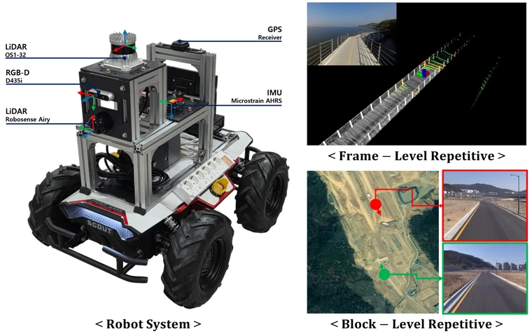
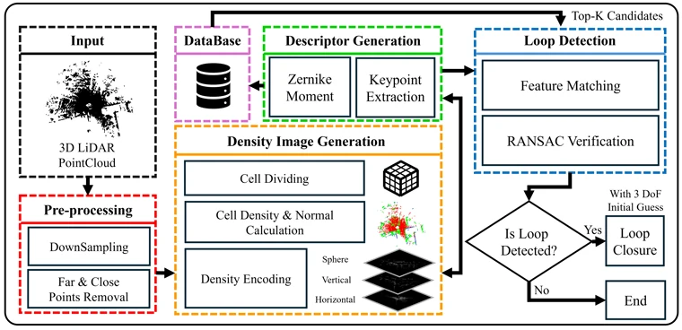

FLASH: Fibonacci Lattice Spherical Harmonics for Semantic Place Recognition Using LiDAR D. Kim, H. Lee · IEEE Robotics and Automation Letters, 2026
 A Multi-Sensor Dataset for SLAM in Repetitive Scene Environments D. Kim, E. Han, S. Kang, S. Lee, H. Lee · IEEE Sensors Letters, 2026
 LiDAR Loop Closure Detection Using Density Images and Zernike Moments D. Kim, H. Lee · Intelligent Service Robotics, 19(5), 78, 2026
Pitch Variation Filter for LiDAR-Only SLAM and Localization in Self-Balancing Mobile Robot D. Kim, H. Lee, K. H. Choi · IEEE Robotics and Automation Letters, 2025